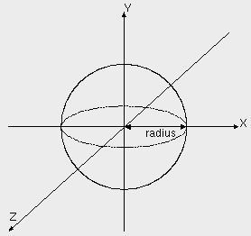

| vfr - Volflex rendering API - |
class vfrBall
Class Hierarchy
Header files
- #include "vfrBall.h"
- vfrBall(const std::string& name VFR_NONAME, const Bool mode = FALSE)
- デフォルトサイズ(半径0.5)、デフォルトの再分割数(2回)のvfrBallオブジェクトを
インスタンスする。
- name オブジェクト名
- mode 自己破壊モード
- vfrBall(const float r, const std::string& name VFR_NONAME, const Bool mode = FALSE)
- 指定された半径(r)のvfrBallオブジェクトをインスタンスする。
- r 半径
- name オブジェクト名
- mode 自己破壊モード
- virtual ~vfrBall()
- vfrBallオブジェクトを破壊する。
public methods / variables
- void setRadius(const float r)
- 半径を設定する。
- r 半径(デフォルト: 0.5)
- void setSubdiv(const int div)
- 再分割数を設定する。
- div 再分割数(デフォルト: 2)
- float getRadius() const
- 半径を返す。
Description
vfrBallクラスは、球を表すオブジェクトクラスである。
半径(radius)が指定されたとき、
以下のような球をレンダリングする。

vfrBallオブジェクトは、レンダリングモードが
RT_POINTの場合、中心位置に一点のみポイントレンダリングを行う。
Subdivision
vfrBallオブジェクトは8面体を基本形状とし、各三角形を4つの小三角形に分割する操作を
再帰的に繰り返すことによって球体を表現する。
再分割操作を何回繰り返すかはsetSubdiv()メソッドで
指定する。
Feedback
vfrBallオブジェクトはローカル座標系の原点の頂点情報しか持たない。
そのため、フィードバックテストにおいては、
フィードバックモード属性に応じ、
以下のような結果を返す。
- FB_VERTEX
- ローカル座標系の原点がフィードバックテストに合格したとき、
頂点数 1、頂点番号 0 を返す。
- FB_FACE, FB_EDGE
- フィードバックテストは常に合格数 0 を返す。